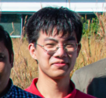

Lab members
 Keith Duncan
| Joined Aug. 2016 | Manager X-ray imaging
facility, 30 years microscopy and imaging of plant biology, old guy.
Keith Duncan
| Joined Aug. 2016 | Manager X-ray imaging
facility, 30 years microscopy and imaging of plant biology, old guy. @CygnusPlantXray
Gus Thies | Joined Feb. 2018 | Graduate student - X-ray imaging,
image segmentation & analysis, proficient in R & Python, biological
modeling, plant care, VR
 Shayla Gunn | Joined
Jul. 2018 | Sr. Lab Technician -
Light/Fluorescence Microscopy, X-ray/2D imaging, molecular wet lab
techniques, background in plant stress physiology/nanotoxicology, general
fast learner
Shayla Gunn | Joined
Jul. 2018 | Sr. Lab Technician -
Light/Fluorescence Microscopy, X-ray/2D imaging, molecular wet lab
techniques, background in plant stress physiology/nanotoxicology, general
fast learner Dhineshkumar
Thiruppathi | Joined Aug. 2018 | Research Scientist- Plant development, Plant
molecular biology, Genetics, Spatiotemporal gene expression, Fluorescence
Microscopy. PhD.
Dhineshkumar
Thiruppathi | Joined Aug. 2018 | Research Scientist- Plant development, Plant
molecular biology, Genetics, Spatiotemporal gene expression, Fluorescence
Microscopy. PhD. @DhineshTweetz
Google Scholar

Nida
Mutan |
2019 - | Part-time laboratory assistant-
wet lab, general lab upkeep, 3d Gel imaging plant biology, 2D imaging, root
counting
 Mitchell
Sellers: | Nov 2019 - | Part-time laboratory
technician - X-Ray imaging/data processing, 2D DIRT imaging, maintenance of
plants in field/greenhouse, wet lab work, general lab upkeep
Mitchell
Sellers: | Nov 2019 - | Part-time laboratory
technician - X-Ray imaging/data processing, 2D DIRT imaging, maintenance of
plants in field/greenhouse, wet lab work, general lab upkeep Marcus
Griffiths | Jan 2021 - | Research Scientist -
Functional phenomics & pipeline lead. PhD.
Marcus
Griffiths | Jan 2021 - | Research Scientist -
Functional phenomics & pipeline lead. PhD. @marcusdgriff
Google Scholar
 Cody Bagnall
| Feb 2021 - | Research scientist -
Agricultural engineer, remote sensing, technology development & field
research development. PhD.
Cody Bagnall
| Feb 2021 - | Research scientist -
Agricultural engineer, remote sensing, technology development & field
research development. PhD. Google Scholar

Alex Liu | May
2021 - | Graduate student WUSTL
 Andrea
Johnston | Nov 2021 - | Lab TechnicianAmelia
Moran | Feb 2022 - | Part-time Lab Tech* friend
of the lab * Mao Li | Senior Research
Scientist & Principal Investigator - mathematical modelling. PhD.
Andrea
Johnston | Nov 2021 - | Lab TechnicianAmelia
Moran | Feb 2022 - | Part-time Lab Tech* friend
of the lab * Mao Li | Senior Research
Scientist & Principal Investigator - mathematical modelling. PhD. @maoli0923
Google Scholar
 Clara Lebow | Joined 2022 | Title Jenna Carter | Joined May 2022 | Title Bharathi Vallabhaneni | Joined May 2022 | Title
Clara Lebow | Joined 2022 | Title Jenna Carter | Joined May 2022 | Title Bharathi Vallabhaneni | Joined May 2022 | TitleFormer lab members
- Aimee Schulz | ? | ?
- Adam Bray | 2017 - 2020 | Wheat Product Development Scientist @ Bayer
- Alicia Zhang | 2019 - 2020 | Graduate Research Assistant @ Boston University
- Benjamin Laws | 2015 - 2019 | Military Medic
- Diana Dizon | 2019 - 2021 | Mid-Product Specialist @ Bayer
- Eddie Campell | 2020 | Assistant Scientist @ Pharmaceutical Product Development (PPD)
- Eric Floro | 2014 - 2018 | Nursery Manager @ Forest ReLeaf of Missouri
- Feray Demirci | ? | Software Developer with Meyers lab @ DDPSC
- Gabriella Pflederer | 2020 | @ Systems Engineering Co-op, bioMérieux
- Jesse Wilson | 2020 | USML student
- Kari Miller | 2016 - 2017 | Biotech Equity Research Fellow @ Kennedy Capital Management
- Karl Joseph Hobaugh | 2020 | Recycling internship
- Kasia Kornacki | ? | ?
- Lee Douangkeomany? | ? | ?
- Marshall Wedger | ? | Graduate Student @ Washington University in St. Louis
- Matthew Mosior | ? | Scientific Programmer @ Moffitt Cancer Center
- Molly Wohl | | Software Engineer @ UW Medicine
- Mon-Ray Shao | 2017 - 2021 | Postdoctoral Researcher @ Utrecht
- Nathanael Ellis | 2017 - 2020 | Biologist @ Bayer
- Ni Jiang | 2015 - 2021 | Assistant Professor @ CAU
- Nia Worth | ? | ?
- Rebecca Bindbeutel | 2018 - 2020 | Lab manager with Nusinow lab and Finance Dept @ DDPSC
- Sam McInturf | 2020 - 2020 | Scientist @ CTC Genomics
- Tiffany Hopkins | 2020 - 2021 | Tech @ Benson Hill
- Tyler Dowd | 2017 - 2022 | Senior Discovery Scientist @ Bayer
- Zhengbin Liu | 2015 - 2019 | Scientist @ Partek Inc.